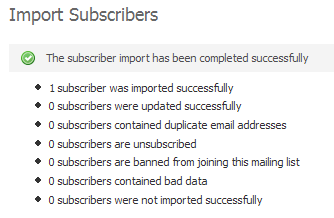

There are 3 different ways you can add contacts to your contact list:
-
Import contacts from a file
If you already have a list of contacts in a file on your computer, you can upload that file into the system and add the contacts to your new contact list. To start, you will need to export your contact list from your other mailing program. You should export your contact list into a CSV (comma separated value) file. A CSV file will contain a list of your contacts details in a line-by-line format, such as:
user1@site.com,MALE,Y,20030101
user2@site.com,FEMALE,N,20031014
user3@site.com,MALE,N,20020706
Move your mouse over the "Contacts" tab and click the "Import Contacts" option, as shown below:
To import contacts from a file, click the "Import Contacts" option under the "Contacts" tab.
This will start the "Import Contacts" wizard. Choose the contact list you want to import contacts to and click the "Next >>" button.
The example import file above includes three records, and each record is separated with a new line. Each record contains four fields, and each field is separated with a comma. The CSV file will typically have a .CSV or .TXT file extension. Start by clicking on the "Browse..." button in the form to select your CSV file from your hard drive:

To import contacts from a file, click the "Browse..." button to choose the file.
If your import file contains a line of headers like this:
EMAIL,SEX,EMPLOYED,DATE
user1@site.com,MALE,Y,20030101
user2@site.com,FEMALE,N,20031014
user3@site.com,MALE,N,20020706
...
... make sure you tick the "Yes, this file contains headers" checkbox. Click the "Next >>" button to proceed to the next step.
You will now be asked to map the fields from the imported file to the fields in the system. Simply click the dropdown box next to each field that was found in the file and match it up to the field in the system. Here's an example for an import file that included "Sex" and "Age" custom fields:
Click the dropdown next to each imported field to map it to the appropriate field in the system.
Click the "Next >>" button when you are done. Finally, click the "Start Import" button. Your contacts will be imported one by one and the popup window that appears will show you how many contacts have been imported and how many remain. You will see a final report when all contacts have been imported:

The final screen will tell you how many contacts were imported. It will also tell you if your contact file contained bad data. -
Type in contacts manually
If you only have a handful of contacts to add to your list, you can use the "Add Contact" form to add them in manually. Move your mouse over the "Contacts" tab and click the "Add Contact" menu option:
To add contacts by typing them in, click the "Add Contact" option under the "Contacts" menu.
Choose a contact list to add contacts to and click the "Next >>" button. Fill out the form by typing in their email address and values for any custom fields you've created for the contact list.
Complete the form to add a contact to the selected contact list.
When you're done, click "Save" to save the contact to the contact list and add another contact. Click "Save And Exit" to add the contact and return to the main page of the system.
-
Create a subscription form for your web site
If you want to offer visitors to your web site a way to sigup to your contact list, you can create a subscription form in the system to add to your site. You will need to have a little experience with HTML to add the form to your web site.
To get started, click the "Website Forms" link shown in the top right-hand corner of the system. This will take you to the "Manage Website Forms" page. Website forms are special forms that you can create. You can create website forms to accept contacts, for someone to unsubscribe, modify their subscription details or send an email campaign to their friends.
Click the "Create Form" button to create a form. Type in a form name and make sure you choose the "Subscription" option from the "Form Type" dropdown. If you aren't sure what any of the fields are, just move your mouse over the help icon next to that field:

Creating a form to accept contacts from your web site is easy.
Click the "Next >>" button. Depending on which form options you chose, you may or may not be required to enter more details. Again, if you are unsure of anything just move your mouse over the help icon next to the field and read the help text.
Once you've created your form you'll be taken back to the "Manage Website Forms" page. Simply click the "Get HTML" link next to your new form and paste that code into your website to add the subscription form to your site.